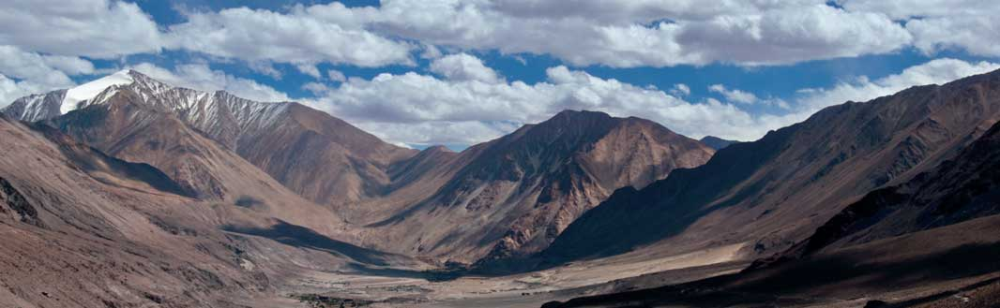

Tata Power Solar, India's largest integrated solar solutions provider, has significantly contributed to the development of remote regions of India by providing sustainable solar power solutions. One of the shining examples of their capabilities is the Lighting up Ladakh project, which brought electricity to over 100 villages in the Leh and Ladakh regions, areas that historically struggled with energy access due to their difficult terrain and extreme climate conditions.
Project Overview
- Project Name: Lighting up Ladakh
- Client: Local Renewable Energy Agencies, MNRE (Ministry of New and Renewable Energy)
- Scope: Powering over 100 villages in Leh and Kargil, installation of microgrids, home lighting systems, and street lights
- Timeline: 2009-2013
- Total Capacity: 1 MW (86 microgrids and 15,000 home lighting systems)
Challenges and Solutions
- Transporting Materials:
- Challenge: High altitudes (18,000 ft) and non-motorable passes made transportation of solar equipment difficult.
- Solution: Tata Power Solar customized the components (e.g., smaller batteries) to be transported by mules and yaks over rough mountain paths.
- Extreme Climate:
- Challenge: Extreme winters (temperatures as low as -20°C) and only 6 months of accessible working time per year.
- Solution: Tata Power Solar maintained a stock of spare parts at the site and designed systems to withstand extreme weather.
- Community Acceptance:
- Challenge: Local communities, accustomed to self-sustaining methods, were initially hesitant to adopt solar energy.
- Solution: Tata Power Solar engaged with the communities, helping them understand the benefits of solar energy, which led to successful implementation.